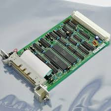

what we have in the computer:
CPU
The computer's central processing unit (CPU) is the portion of a
computer that retrieves and executes instructions. The CPU is essentially
the brain of a CAD system. It consists of an arithmetic and logic unit
(ALU), a control unit, and various registers. The CPU is often simply
referred to as the processor motherboard:is the main printed circuit board
(PCB) in general-purpose computers and other expandable systems. It holds
and allows communication between many of the crucial electronic components
of a system, such as the central processing unit (CPU) and memory, and
provides connectors for other peripherals. Unlike a backplane, a
motherboard usually contains significant sub-systems, such as the central
processor, the chipset's input/output and memory controllers, interface
connectors, and other components integrated for general use.and
daughterboards: sound cards, video cards, network cards, host bus
adapters, TV tuner cards, IEEE 1394 cards; and a variety of other custom
components.

RAM
is a form of computer memory that can be read and changed in any
order, typically used to store working data and machine code. A
random-access memory device allows data items to be read or written in
almost the same amount of time irrespective of the physical location of
data inside the memory, in contrast with other direct-access data storage
media (such as hard disks, CD-RWs, DVD-RWs and the older magnetic tapes
and drum memory), where the time required to read and write data items
varies significantly depending on their physical locations on the
recording medium, due to mechanical limitations such as media rotation
speeds and arm movement.

CASE
A computer case, also known as a computer chassis, is the enclosure
that contains most of the components of a personal computer (usually
excluding the display, keyboard, and mouse). Cases are usually constructed
from steel (often SECC—steel, electrogalvanized, cold-rolled, coil),
aluminium and plastic. Other materials such as glass, wood, acrylic and
even Lego bricks have appeared in home-built cases.

POWER SUPPLY
A power supply is an electrical device that supplies electric
power to an electrical load. The main purpose of a power supply is to
convert electric current from a source to the correct voltage, current,
and frequency to power the load. As a result, power supplies are sometimes
referred to as electric power converters. Some power supplies are separate
standalone pieces of equipment, while others are built into the load
appliances that they power. Examples of the latter include power supplies
found in desktop computers and consumer electronics devices. Other
functions that power supplies may perform include limiting the current
drawn by the load to safe levels, shutting off the current in the event of
an electrical fault, power conditioning to prevent electronic noise or
voltage surges on the input from reaching the load, power-factor
correction, and storing energy so it can continue to power the load in the
event of a temporary interruption in the source power (uninterruptible
power supply).

DVD DRIVE
In computing, an optical disc drive (ODD) is a disc drive that
uses laser light or electromagnetic waves within or near the visible light
spectrum as part of the process of reading or writing data to or from
optical discs. Some drives can only read from certain discs, but recent
drives can both read and record, also called burners or writers (since
they physically burn the organic dye on write-once CD-R, DVD-R and BD-R
LTH discs). Compact discs, DVDs, and Blu-ray discs are common types of
optical media which can be read and recorded by such drives. hard drive:A
hard disk drive (HDD), hard disk, hard drive, or fixed disk[b] is an
electro-mechanical data storage device that stores and retrieves digital
data using magnetic storage and one or more rigid rapidly rotating
platters coated with magnetic material. The platters are paired with
magnetic heads, usually arranged on a moving actuator arm, which read and
write data to the platter surfaces. Data is accessed in a random-access
manner, meaning that individual blocks of data can be stored and retrieved
in any order. HDDs are a type of non-volatile storage, retaining stored
data even when powered off. Modern HDDs are typically in the form of a
small rectangular box.

peripheral CARD
is a local computer bus for attaching hardware devices in
a computer and is part of the PCI Local Bus standard. The PCI bus supports
the functions found on a processor bus but in a standardized format that
is independent of any given processor's native bus. Devices connected to
the PCI bus appear to a bus master to be connected directly to its own bus
and are assigned addresses in the processor's address space. It is a
parallel bus, synchronous to a single bus clock. Attached devices can take
either the form of an integrated circuit fitted onto the motherboard
(called a planar device in the PCI specification) or an expansion card
that fits into a slot. The PCI Local Bus was first implemented in IBM PC
compatibles, where it displaced the combination of several slow Industry
Standard Architecture (ISA) slots and one fast VESA Local Bus (VLB) slot
as the bus configuration. It has subsequently been adopted for other
computer types. Typical PCI cards used in PCs include: network cards,
sound cards, modems, extra ports such as Universal Serial Bus (USB) or
serial, TV tuner cards and hard disk drive host adapters. PCI video cards
replaced ISA and VLB cards until rising bandwidth needs outgrew the
abilities of PCI. The preferred interface for video cards then became
Accelerated Graphics Port (AGP), a superset of PCI, before giving way to
PCI Express.
